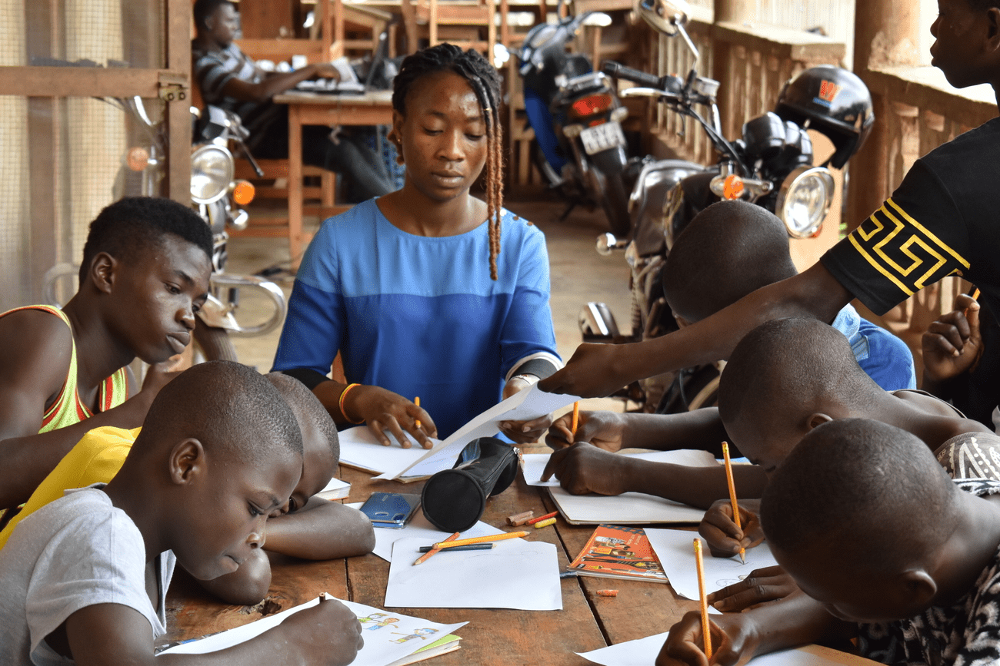
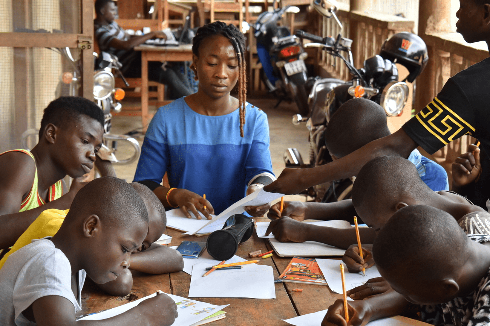

Le sénat qui rassemble les membres fondateurs, avec pour rôle de veiller à la cohésion de l’organisation, de valider les programmes d’action, les projets et les budgets soumis par l’équipe dirigeante et de veiller au respect de ce programme d’action.
La chancellerie, organe servant de lien entre le Sénat et le Bureau Exécutif. Le chancelier est désigné parmi les membres du sénat, pour un mandat de trois ans renouvelable. Représentant juridique du MAREM, Il dirige l’ONG avec le président ou la présidente du bureau exécutif.
Le Bureau Exécutif, organe d’administration au quotidien du MAREM. Il est composé de la présidence, du secrétariat, de la trésorerie et du commissariat aux comptes. Il veille à la bonne exécution des projets mis en place.
Organigramme 2014 – 2017 Chancelier: M. Joseph LABA Présidente: Mme Eva ANIKA-ALLABA Trésorière: Mme Edwige KPOTOR-AGOUDA
 


FODDET Forum des Organisations de Défense des Droits de l’Enfant au Togo
RESAEV Togo Réseau des Structures d’Accueil des Enfants Vulnérables au Togo
UNICEF Togo Fonds des Nations Unies pour l’Enfance
YMCA/UCJG TOGO Union Chrétienne des Jeunes Gens. ymcatogo.org
INJS, Institut National de Jeunesse et des Sports
Le Centre Kekeli
Commune française où a été basée durant plusieurs années notre première antenne française (MAREM France). Gentilly soutient le Programme EMERA et a co-financé notre projet de réaménagement de l’Espace MAREM Woezon ville-gentilly.fr/
situé en Ile-de-France soutient nos actions à travers les subventions accordées à notre antenne française basée à Gentilly. Le département du Val-de-Marne vient de co-financer les travaux de réaménagement de notre Espace MAREM Woezon. valdemarne.fr/
ONGD de développement basée à Malaga, avec pour objectif de soutenir des associations de par le monde à construire un monde solidaire et en paix. Elle soutient le Programme EMERA en 2020. C’est grâce à son soutien, que nous avons pu obtenir les fonds nécessaires à la construction des locaux définitifs du Programme EMERA, inscrivant ainsi nos actions dans la durabilité. aspa-andalucia.org/
Finance la construction des locaux définitifs de notre foyer résidentiel longue durée réservé pour les enfants retirés de la rue ne pouvant pas être réinséré directement en famille. AACID est également le partenaire majeur du Programme EMERA en 2020. juntadeandalucia.es/aacid/
"Ensemble pour Soutenir les Projets et Programmes en faveur des Enfants de la Rue" Son objectif aider les actions de réinsertion sociale et professionnelle des enfants et des jeunes de la rue dans le monde, quels que soient leur lieu de vie, leur sexe, leur origine, leurs activités, leurs croyances. espper.org
ACTES est une association de solidarité internationale qui aide à promouvoir l’éducation et la santé pour tous. Les projets proposés par l’association sont en Afrique ( Sénégal, Togo, Madagascar, Burkina Faso), en Asie (Inde, Népal, Thaïlande, Vietnam, Cambodge), en Amérique du Sud ( Pérou, Haïti). L’association ouvre ses portes aux étudiants du secteur médical et paramédical de la faculté de Lyon 1. Depuis 2017, des étudiants de ACTES réalisent chaque été une mission d’un mois à Lomé pour appuyer la prise en charge sanitaire de nos enfants à l’Espace Woézon comme au centre EMERA. association-actes
Planète Urgence ONG française spécialisée dans l’envoi de volontaires sur de courtes durées pour renforcer les capacités d’acteurs de la solidarité dans les pays du Sud. planète-urgences.org
Permondo PerMondo est une initiative créée et gérée par l’agence de traduction Mondo Agit. Son objectif principal est d’aider les associations et les initiatives à but non lucratif par la traduction de leurs documents et de leurs sites internet de manière gratuite. permondo.eu/fr/
HELLO ASSO Grâce à sa plateforme sécurisée, nos donateurs particuliers français peuvent donner sereinement en ligne pour soutenir nos projets ou encore devenir parrain de nos actions. helloasso.com/
LILO Grâce à notre partenariat avec le moteur de recherche Lilo, vous pouvez soutenir nos actions, juste en faisant des recherches avec ce moteur, où que vous soyez dans le monde. Vous pourrez alors dédier à notre projet, les gouttes que vous collecterez. lilo.org/fr/pour-la-reinsertion-des-enfants-des-rues-au-togo/
Solidarité Franciscaine – Fondation François d’Assise Principal financeur du Programme EMERA depuis 2008, la Fondation François d’Assise (France) soutient financièrement les projets de développement social et économique qui améliorent le cadre de vie des plus pauvres, leur dignité et leur participation citoyenne. fondationfrancoisdassise.fr